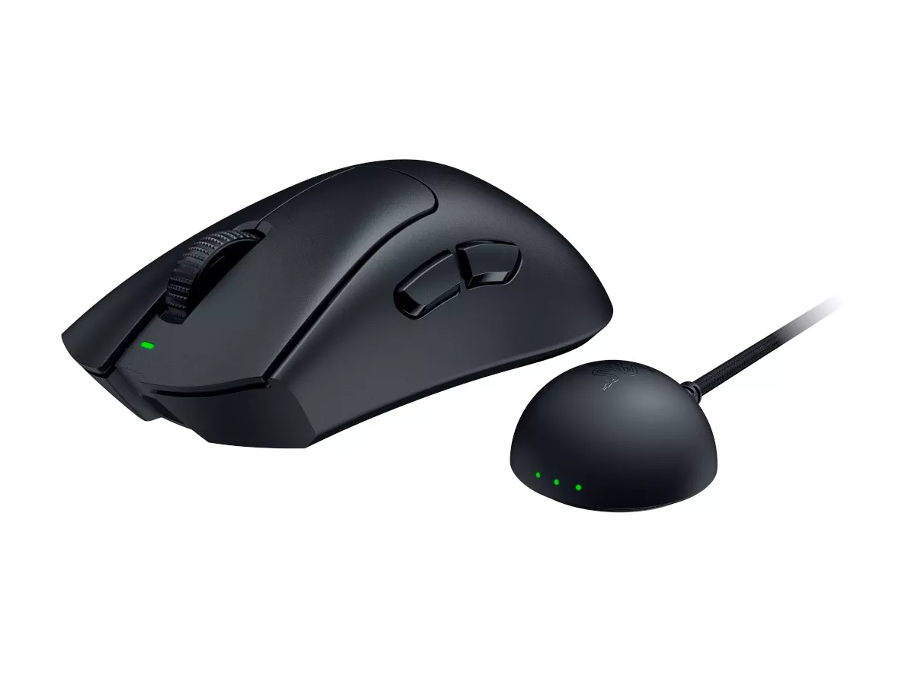

DeathAdder V4 Pro
RAZERマウス
使用日数
136日
クリック回数
63,1294回
購入日
2024/8/15
よく使うボタン
左クリック
状態: 良好
バージョン：最新
次回アップデート: 2024/12/15
112
記録日数
+49,245回
クリック回数(1ヵ月)
5回
掃除回数
24
写真・思い出
バッテリー残量
75% / 100%ポーリングレート安定性
7850Hz / 8000Hzスイッチ耐久度
8,500万 / 9,000万回センサー精度 (LOD)
最適化済み
新しいファームウェアが利用可能です！
Ver 2.4.0 がリリースされました。Synapseからアップデートして安定性を向上させてください。
デバイスログ一覧
| 日付 | 種類 | 内容 | 詳細 | 操作 |
|---|---|---|---|---|
| 2024/11/18 | DPI変更 | 1600 DPI | VALORANT向けに微調整 | |
| 2024/11/10 | キャリブ | 表面識別 | Razer Strider パッドに最適化 | |
| 2024/11/05 | 充電 | フル充電完了 | サイクルカウント: 45回目 | |
| 2024/10/20 | 設定変更 | LOD 1mm | リフトオフディスタンス短縮 | |
| 2024/10/05 | 充電 | 急速充電 | 緊急のため15分充電実施 | |
| 2024/09/15 | Update | F/W 更新 | ワイヤレス接続の安定性向上 | |
| 2024/09/08 | メンテ | ソール交換 | PTFEソールへ張り替え完了 |
最近のアクティビティ
2時間前
クリップ保存
NVIDIA Reflex Latency: 12ms
K/D 推移（6ヶ月）
平均クリック遅延
0.2ms
最大トラッキング
750 IPS
クイックアクション
今日 8:30
今日 8:30
セルフチェック完了
全ボタン応答正常
今日 7:00
ワイヤレス接続確立
HyperPolling Dongle 認識
昨日 14:30
ゲームモード起動
RGBライティング: OFF (省電力)
3日前
グリップテープ装着
操作性が向上しました